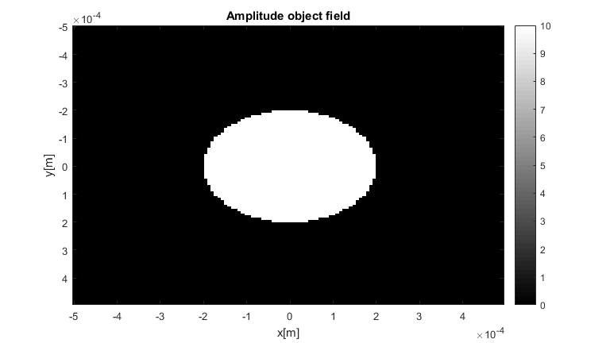
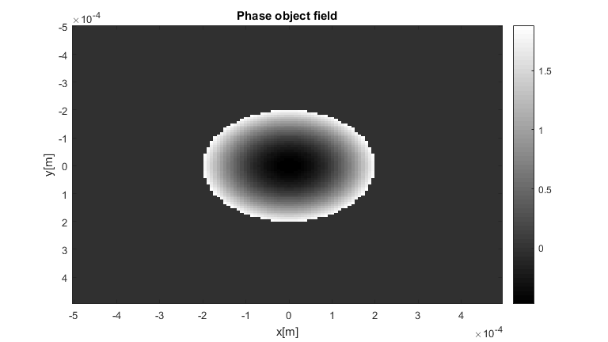
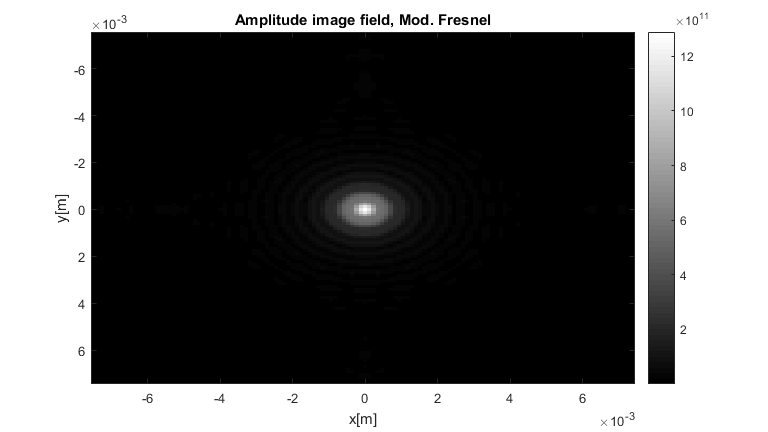
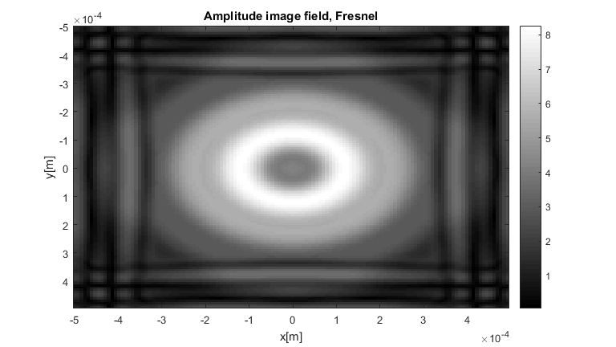

Contents
Example Modified Fresnel propagator
clear,clc,close all
Set up
M = 128;
A0 = zeros(M);
L = 1e-3;
z = 300e-3;
lambda = 532e-9;
dx=L/M;
odx=15;
k = 2*pi/lambda;
x = -L/2:dx:L/2-dx;
[X,Y] = meshgrid(x,x);
A0(sqrt(X.^2+Y.^2)<=0.2e-3) = 1;
propag = 0.1;
SourcePhase = exp((1i*k*sqrt(X.^2+Y.^2+propag.^2)))./sqrt(X.^2+Y.^2+propag.^2);
A0 = A0.*SourcePhase;
figure, imagesc(x,x,abs(A0)), colorbar, colormap gray, title('Amplitude object field'), xlabel('x[m]'), ylabel('y[m]');
set(gcf,'Units', 'normalized', 'Position', [0 0.05 0.4 0.4]);
figure, imagesc(x,x,angle(A0)), colorbar, colormap gray, title('Phase object field'), xlabel('x[m]'), ylabel('y[m]');
set(gcf,'Units', 'normalized', 'Position', [0 0.5 0.4 0.4]);
 
Modified Fresnel propagator
[A, X2, Y2] = propF_Mod(A0, L, z, L*odx, lambda);
figure,imagesc(X2(1,:),X2(1,:),abs(A)),colorbar, colormap gray, title('Amplitude image field, Mod. Fresnel'), xlabel('x[m]'), ylabel('y[m]');
set(gcf,'Units', 'normalized', 'Position', [0.6 0.05 0.4 0.4]);

Fresnel propagator using impulse response
[u2] = propIR(A0,L*2,lambda,z);
figure,imagesc(x,x,abs(u2)),colorbar, colormap gray, title('Amplitude image field, Fresnel'), xlabel('x[m]'), ylabel('y[m]');
set(gcf,'Units', 'normalized', 'Position', [0.6 0.5 0.4 0.4]);
